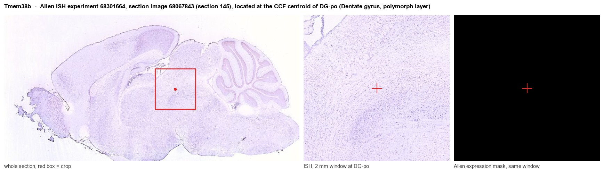
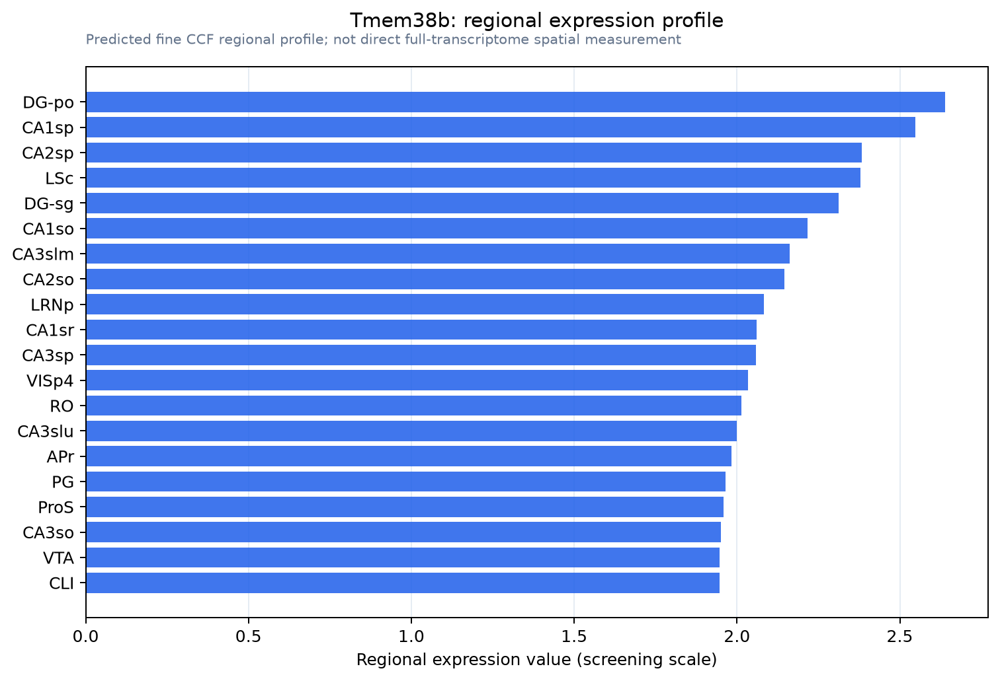

Tmem38b
Trimeric intracellular cation channel type B (TRIC-B) (TRICB) (Mitsugumin-33B) (Transmembrane protein 38B)
Spatial tier: REGION_BIASED · Class: ION_CHANNEL · Top region: DG-po (Dentate gyrus, polymorph layer) · Positive regions: 35/554
41.6Discovery Score
38.0Targetability Score
CEvidence grade C
What this means: Tmem38b: fine CCF profile is region-biased toward DG-po (top regions: DG-po, CA1sp, CA2sp, LSc, DG-sg); this is a discovery lead, not direct proof.
Function in DG-po: evidence, prediction, innovation
- Gene function
- TMEM38B encodes TRIC-B, a trimeric intracellular cation channel in the ER membrane. It conducts monovalent cations, mainly K+, into the ER lumen as counter-current while Ca2+ exits through IP3 or ryanodine receptors, dissipating the negative potential that would otherwise stall Ca2+ release. Biallelic TMEM38B mutations cause recessive osteogenesis imperfecta type XIV.
- Region function
- The dentate hilus contains mossy cells and GABAergic interneurons whose feedback onto granule cells controls dentate gain and enables pattern separation (Jinde 2012).
- Published in this region
- none No region-specific literature found. The nearest evidence is non-neural: TRIC-B knockout mice show defective IP3-receptor Ca2+ release, impaired alveolar epithelial Ca2+ handling and perinatal lethality (Yamazaki 2009), and disrupted osteoblast Ca2+ homeostasis and collagen synthesis (Zhao 2016, Cabral 2016). Allen ISH shows only weak Tmem38b signal in DG-po (energy 1.3), highest of the regions queried but near threshold.
- Predicted function
- Prediction: if TRIC-B is functional in hilar neurons it is the ER counter-ion pathway permitting full IP3-receptor Ca2+ release downstream of group I mGluR and muscarinic input, both prominent in mossy cells. Conditional deletion should shrink mGluR-evoked Ca2+ transients and Ca2+-activated afterhyperpolarisations, raising hilar excitability and degrading feedback inhibition. Compensation by the paralogue TRIC-A may make any single-gene phenotype weak.
- Innovation
- ★★★★★ 5/5 No published work exists on TRIC-B in any brain region, despite a clear mechanistic role in ER Ca2+ release.
- Tools
- Tmem38b knockout and floxed mice (Yamazaki 2009, Zhao 2016); anti-TRIC-B antibodies from the osteogenesis imperfecta literature; no selective pharmacology, so AAV-shRNA or CRISPR with mossy-cell Cre drivers is the route.
- References
Direct evidence located at the region

Allen ISH experiment 68301664, section image 68067843 (section 145): the section that contains the CCF centroid of Dentate gyrus, polymorph layer according to the Allen image-to-atlas alignment (reference_to_image), with a 2 mm window around that point. Left: whole section, red box = window. Middle: ISH signal. Right: Allen's expression-mask view of the same window. open this image in the Allen viewer
Look it up yourself: Allen Mouse Brain ISH for Tmem38bAllen reference atlas: DG-po (structure 10704)ABC Atlas MERFISH viewer(in the ABC Atlas choose dataset MERFISH-C57BL6J-638850-CCF, colour cells by gene "Tmem38b" or by parcellation_substructure "DG-po")All genes confined to DG-po + 3-D brain
Direct spatial evidence
MERFISH REGION LOCATOR

Regional expression figure

Predicted WMB × fine-CCF profile; not direct full-transcriptome spatial measurement.
Spatial profile
Evidence and specificity
- Evidence status
- PREDICTED_FINE
- Direct sources
- None; predicted localization only
- Exclusive threshold
- 12 positive regions out of 554
- Spatial specificity
- 0.284
- Top-region fraction
- 0.044
- Filter status
- PASS
Interpretation limits
- Cell-type-to-region projection is imputed expression, not direct spatial measurement.
- Adult reference atlases do not establish stability across age, sex, strain, state, or disease.
- Transcript abundance does not guarantee protein abundance or genetic-tool performance.